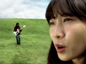
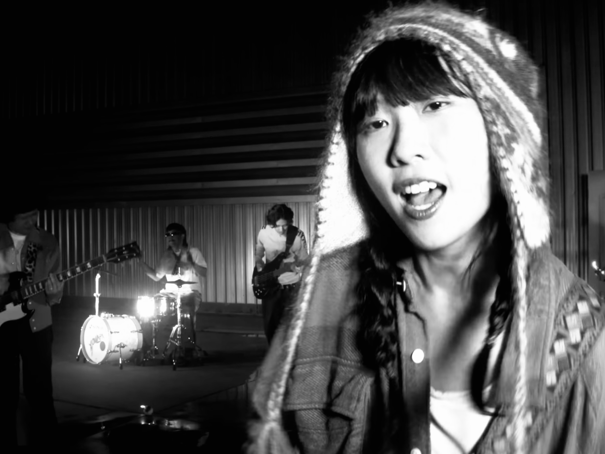
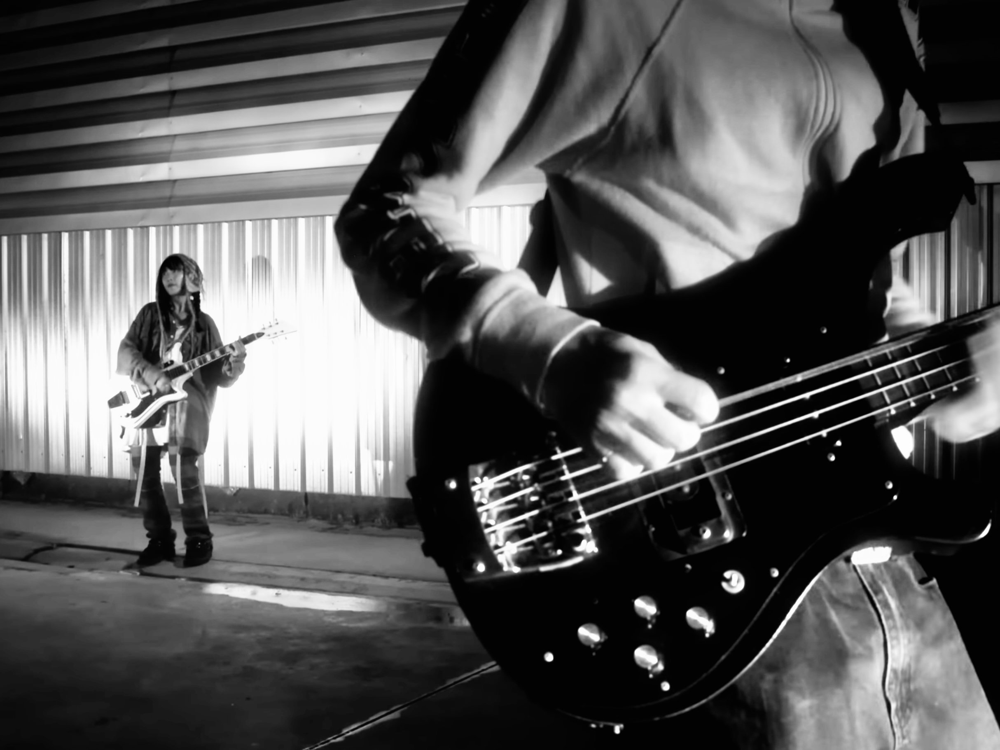
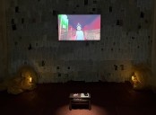
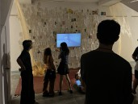
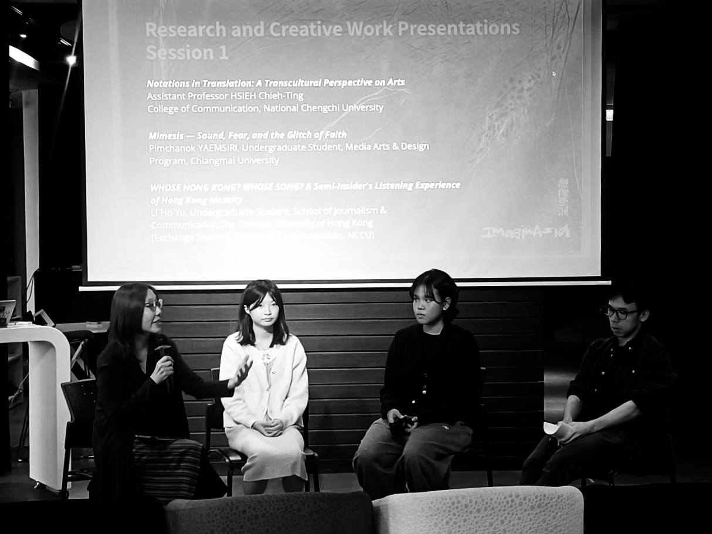

PIMCHANOK YAEMSIRI | 18 JANUARY 2004
I’m a multidisciplinary creative with an interest in visual culture, storytelling, and contemporary media. Over time, I’ve explored different ways of working across film, visual design, and digital media, which has shaped the way I approach ideas and creative processes. I’m particularly drawn to the process of developing concepts and turning them into visual experiences. For me, creative work is not only about making images or projects, but also about observing, questioning, and finding meaningful ways to communicate ideas. I enjoy working across different formats and approaches, and I’m always interested in learning, experimenting, and collaborating with others.
ฉันเป็นคนทำงานสร้างสรรค์ที่สนใจการทำงานข้ามสาขา โดยเฉพาะในพื้นที่ ของวัฒนธรรมภาพ การเล่าเรื่อง และสื่อร่วมสมัย ที่ผ่านมาได้ลองทำงานใน หลายรูปแบบ ทั้งภาพยนตร์ การออกแบบภาพ และสื่อดิจิทัล ซึ่งทำให้มุมมอง ต่อการพัฒนาไอเดียและกระบวนการทำงานค่อย ๆ เปลี่ยนไปตามประสบการณ์ สิ่งที่ฉันสนใจเป็นพิเศษคือกระบวนการพัฒนาแนวคิดและการเปลี่ยนมันให้ กลายเป็นประสบการณ์ทางภาพ สำหรับฉัน การทำงานสร้างสรรค์ไม่ได้เป็นแค่ การผลิตผลงาน แต่ยังเกี่ยวข้องกับการสังเกต การตั้งคำถาม และการหาวิธีสื่อสาร ความคิดในแบบที่มีความหมาย ฉันสนุกกับการทดลองวิธีการทำงานใหม่ ๆ และเปิดรับโอกาสในการเรียนรู้และร่วมงานกับผู้คนที่หลากหลาย
Assistant Director / Editing / Color Grading



Interactive visual project exploring immersive digital environments.



Interactive media thesis project developed using Unreal Engine.
MORE >>>2004 – Present
Thailand
2022 – Present
Media Arts and Design (MADs)
Chiang Mai University
Film
Visual Design
Editing
Color Grading
Art Direction
Unreal Engine
DaVinci Resolve
Premiere Pro
Adobe Creative Suite
Photography
Video
zoarpimchanok@gmail.com
zoarrq
Tel.
+66 918154326